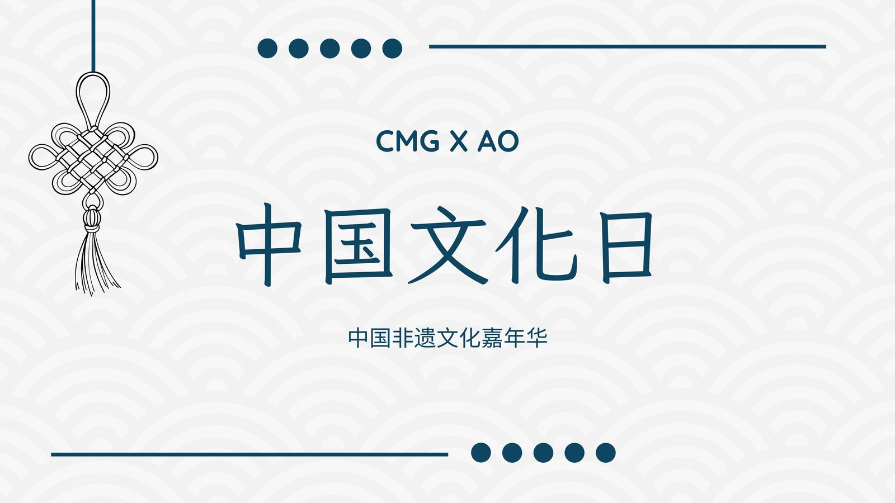
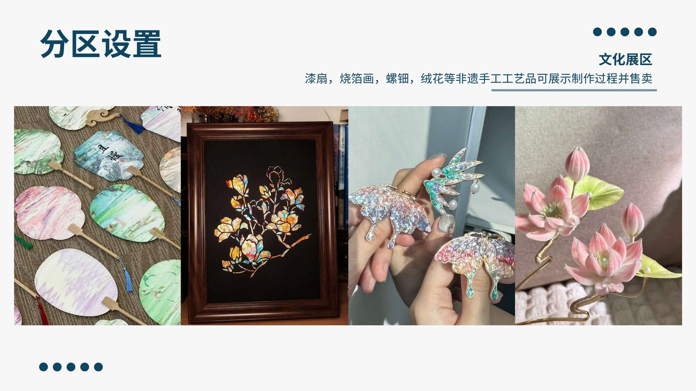
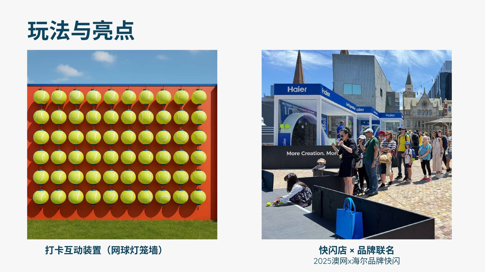

CMG x 澳大利亚网球公开赛
在中央广播电视总台（CMG）与澳大利亚网球公开赛（Australian Open）合作框架下，策划为期两天的非遗文化嘉年华。活动设在澳网场地周边，利用赛事流量实现中国文化在体育赛事场景下的出海展示，是"体育 + 文化 + 商业"融合的典型场景。
负责展区规划与落地执行，设置四大展区：
在体育赛事场景下完成文化出海展示，将非遗工艺、传统美食与现代科技互动结合，吸引大量澳网观众驻足参与。网球灯笼墙打卡环节成为社交媒体自发传播热点，有效扩大了活动的二次传播覆盖面。


